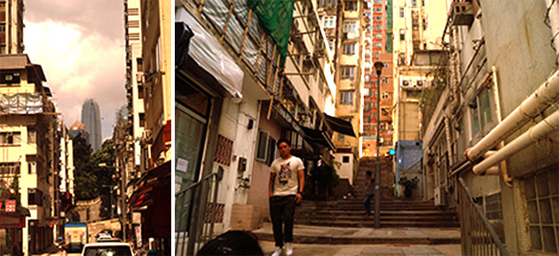
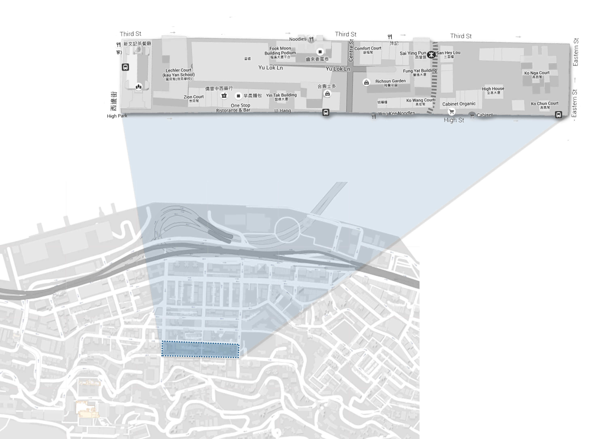
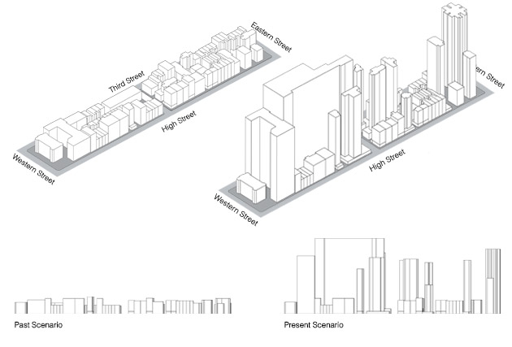
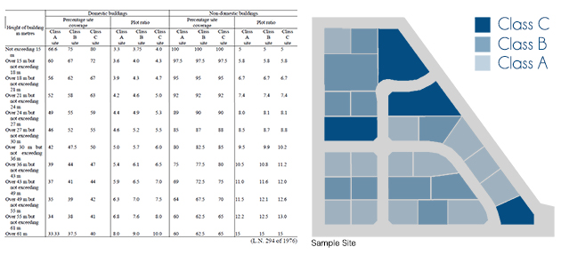
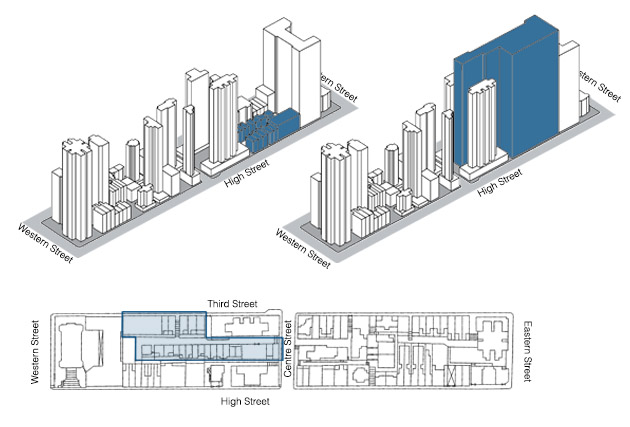
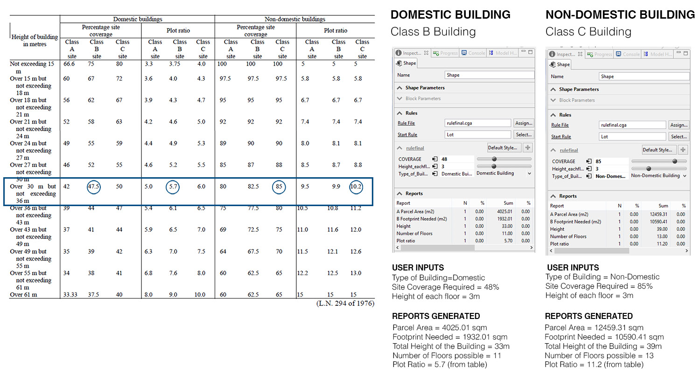
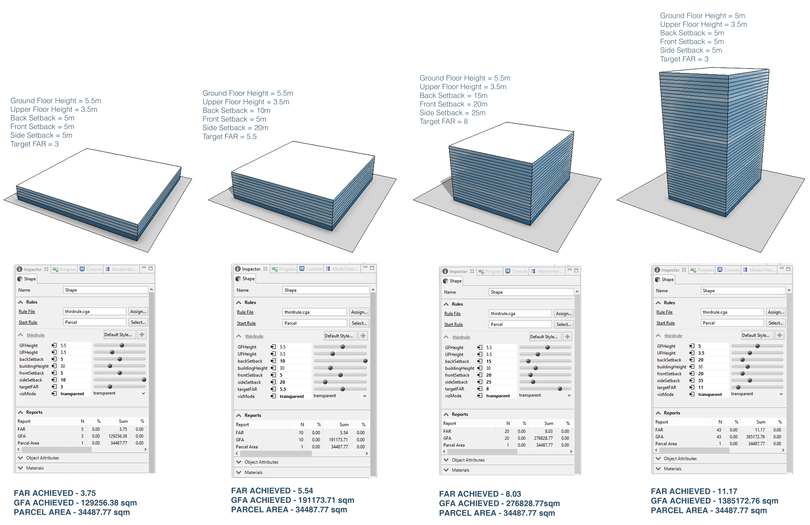
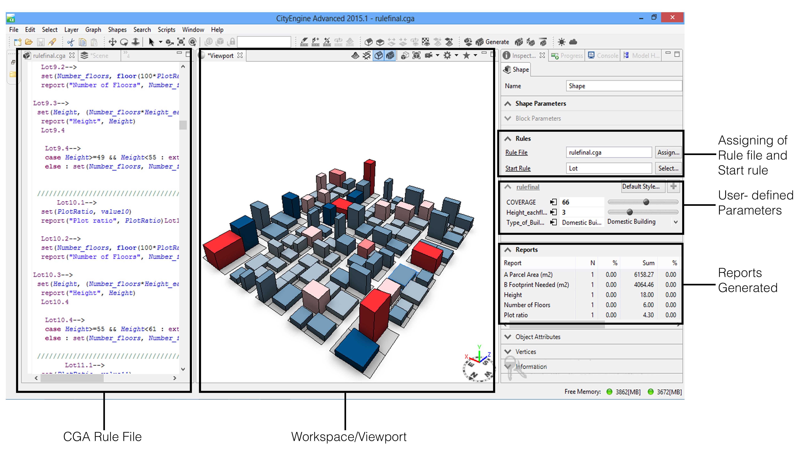
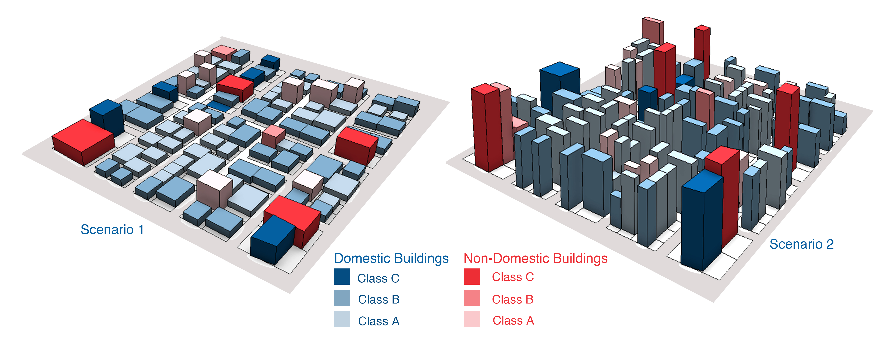

future urban fabric
Overview
Research work done to investigate impact of by-laws on city development implemented using procedural modelling techniques.
Description
The aim of the study was to determine why some cities look different even though they have topography, climatic conditions similar to other cities. I concentrated on the impact of by-law data and studied the Sai ying Pun area as a case study.
I also developed an algorithm to forecast how a city will look if we try to tweak parameters like site coverage, city by-laws, plot ratios etc and how can developers maximise profit by maximising floor area.
I used Esri City engine for this study and developed a model where the user can input parameters like site coverage, height required and height of each floor and can get real-time reports on the resulting parcel area, footprint needed, number of floors along with a 3D simulation of this data.
Mentor
Prof. Hendrik Teiben
Chinese University of Hong Kong, Hong Kong, 2015
Sai Ying Pun is one of the oldest areas of Hong Kong and is the target of current urban redevelopment efforts of by the Urban Renewal Authority of Hong Kong. Sai Ying Pun was laid out in 1855-61 and literally meant the Western Encampment-the earliest British military camp in Hong Kong between 1841 and 1863. A labyrinth of internal connections cut through the area, provided access to the block interior, and connected adjacent properties. Underlying these urban solids and voids of the district was a hidden structure of order and disorder that recalled history, formed the armature of urban life and has shaped the transformation of Sai Ying Pun since.
Though Sai Ying Pun has been a low-key residential neighbourhood for decades, its origins were much rowdier. First settled by the British military (its name literally means "West Camp"), the compact street grid was laid down in the 1880s and soon filled up with crowded tenements.
My research began by studying and modelling the area by conducting on-site surveys. I delved into the history and present scenario of the site.
I studied the factors which have contributed towards the change in the urban fabric of this area and benchmarked 4 development parameters namely site class rule, floor area ratio, site coverage and maximum height and focused my research on these parameters.
The rule of site class
The development rules vary according to the type of site it is. Class A Site is one that abuts on one specified street not less than 4.5m wide, Class B Site is a corner site, that abuts on 2 specified streets neither of which is less than 4.5m wide and Class C site is a corner site, that abuts on 3 specified streets none of which is less than 4.5m wide.
The Nova - A recent development
I did a case study on a recent development called The Nova in Sai Ying Pun, the highest new building of this block with 35 floors providing 255 units. This development is particularly interesting because the plot that was selected for this development has been cut out in such a way that makes it a Class B building giving it scope for building more floors. The aim is also to preserve and integrate the relics and historical identities of the six older buildings into the new development.
Urban Rules Simulation through City Engine
The urban rule data set of Hong Kong is coded into the city engine program. The user has to input what site coverage they desire and what height do they want for each floor. The software then automatically finds the plot ratio value alowed for that site coverage and generates the building block with the possible height according to the rules.
Procedural Modeling in City Engine to achieve target FAR value
This is an example to show how city engine works. This particular example illustrates the use of City Engine to achieve a target FAR and reports on GFA and parcel area are also generated according to the the user controlled parameters like ground floor height, upper floor height, back setback, front setback and desired FAR.
User Interface of City Engine
3-D Model Generation of an Urban Neighbourhood using City Engine
These two blocks are different simulations of the same neighbourhood. The user inputs have been varied and the two contrasting results have been compared. The main aim behind this simulation is to show how urban rules shape our cities. The way a city looks hugely depends on what heights are allowed, what site coverage, what setbacks are allowed. This simlution focuses on plot ratio and coverage rules only. Just by changing these parameteres within the allowed values we can obtain totally different looking cities even though they may share the same topographical characteristics or climatic characteristics.